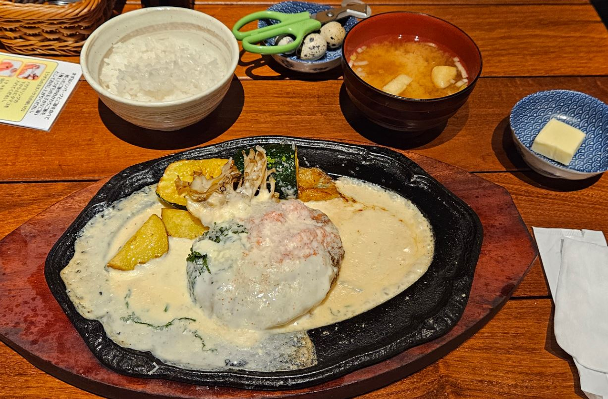
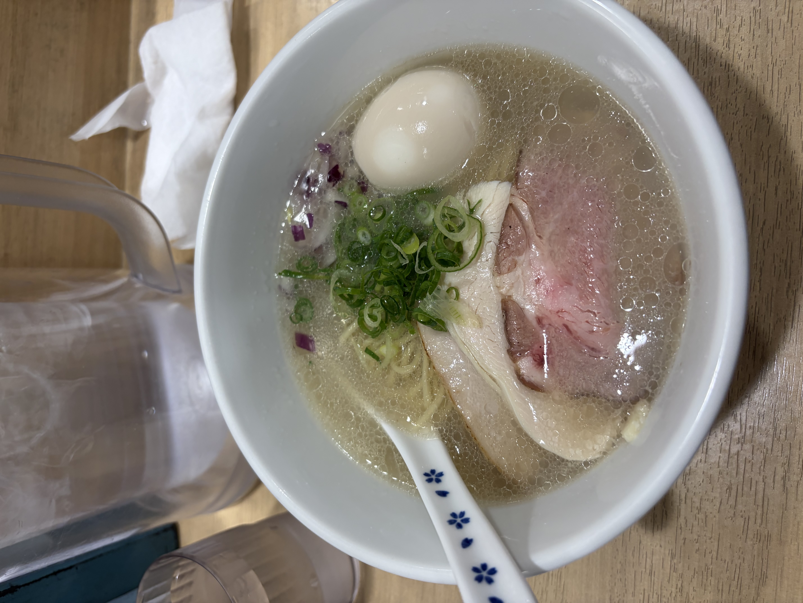

26/8/31（Posted）KURAKATSU@kurakatsu
The huge amount of cheese is insanely delicious! The all-you-can-eat rice that comes with the set goes so well with it! I was overwhelmed by the ridiculous amount of cheese!
■Limited-Time Shiso & Mentaiko Cheese Hamburger (Melt it with the butter topping and stuff it into your mouth together with the rice!)
⇒★★★★⋆ 4.5
■I Want to Eat Your Hamburger (Shibuya)
■Shibuya, Tokyo
■Around 3,000 yen
■Ate day：26/8/29

（Photo taken by me）
26/4/25（投稿日）ISSY＠issy
The soup is light and refreshing, and the thin noodles make it very easy to eat—overall, it’s extremely delicious. The soup has a strong shellfish-based broth, giving it a deep and rich flavor with great depth. I like it so much that I go there every time I visit Shimokitazawa, where my friend lives. It’s a popular restaurant, so there’s often a line, and there are many female customers as well. The flavor also goes perfectly after drinking, so if you go to Shimokitazawa, you should definitely stop by.
■Shio Ramen (Chinese-style noodles) (× You MUST order the shellfish rice! Pour the soup over it and it’ll blow your mind.)
⇒★★★★ 4.0
■Kaimen Mikawa
■Setagaya, Tokyo (Shimokitazawa)
■980 yen
■Ate day: 25/11/3

(Photo taken by myself)
26/3/25（Posted）KURAKATSU@kurakatsu
Depending on the day, the Chinese cabbage from different regions is sweet and goes perfectly with the tanmen. Adding the homemade chili oil makes it even better! It’s quite spicy, so be careful not to add too much. If you like cilantro, the cilantro topping is also recommended!
■Tanmen (× Eat it with homemade chili oil!)
⇒★★★★⋆ 4.5
■Ginza Tanmen
■Chuo City, Tokyo
■1100 yen
■Ate day：26/3/24 （Photo taken by myself）
26/1/30（Posted）YOSHIO＠yoshio
New York–style sliced pizza. A large gas oven gives it an authentic feel. Baked at about 350℃. Two 1/8 slices larger than a palm, so the volume is satisfying,
The taste isn’t bad, but the cheese has a heavy, bland flavor, making it overall closer to fast food. The freshness of the tomato and the crispness・
and juiciness are weak, giving a dry, somewhat mushy impression. This may be a characteristic of New York–style pizza, assuming it’s not freshly made. Reconfirms that I’m a Neapolitan pizza person.
■Cheese pizza, Jalapeño pizza, Cola
⇒★★★ 3.0
■maple pizza
■Taito-ku, Tokyo
■Total 1600 yen
■Ate day：26/1/23
 （Photo taken by myself）
（Photo taken by myself）